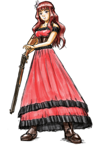
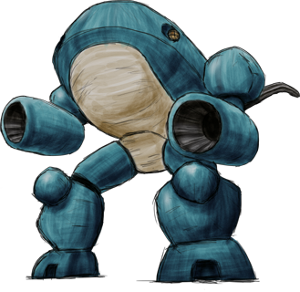

キャラクター紹介
エレナ・ストーン
|

|
エレナ・ストーン (Elena Stone)。
主人公。
元お金持ちのお嬢様。
赤毛でお嬢様縦ロールが崩れた髪型をしている。
頭に付けている花飾りはカネノナルキの花を巨大化させた造花。
後頭部に薬莢で作ったバレッタ (Barrette of Bullet) を装着している。
その他、赤いドレス、革のコルセット、ウエスタンブーツを着用。
ウィンチェスターライフルを使いこなす。
家が没落したときに多くのモノを失っている。
ゴールドに執着がある。
|
ガンライド
|

|
乗用機関銃 ガンライド 伍式 "カワウソ" (Gunride Model-5 "Otter")。
エレナが搭乗するロボット。
オートバイのようなハンドルとメーターが付いている。
ハンドルの下にはペダルも付いている。
背中にエンジン、腹部に燃料タンク、肩に弾倉、腕が砲身となっている。
エレナが搭乗するのはガンライドの中でも高速走行タイプ。
ゲーム中に登場しないが他のタイプも存在する。
日本製。
|
ストーリー
エレナと奇妙な金鉱
エレナは旅の途中、立ち寄った町で仕事を請け負った。
『町の金鉱がモンスターたちに乗っ取られたので取り返してほしい』という依頼だった。
その金鉱は入る度に形が変わって見える、奇妙な金鉱らしい。
エレナは愛機にまたがり、金鉱に入っていく。
町の人々のために金鉱を取り返すと同時に、自分のために幾らかのゴールドを”せしめる”ことを考えながら...